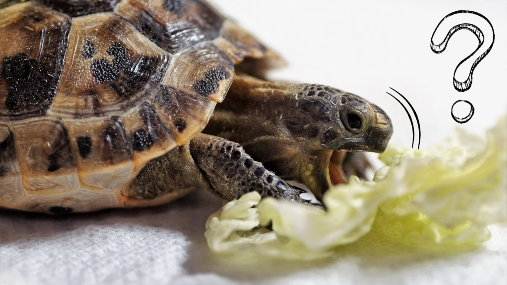

Żółwie wodne są wszystkożerne, co oznacza, że ich dieta powinna być zróżnicowana. Możesz podawać im granulki przeznaczone dla żółwi, świeże warzywa, a także białko w postaci ryb i owadów. Ważne jest, aby nie przesadzać z ilością jedzenia, ponieważ żółwie mają tendencję do nadwagi. Regularne monitorowanie diety pomoże utrzymać ich w dobrej kondycji.
 |